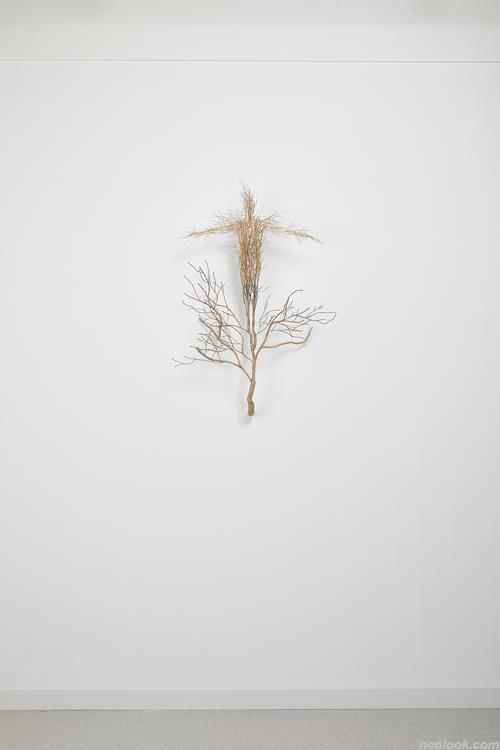

김선혁
https://www.sunhyuk.com/
무엇을
>>사람
어떻게
>>땅에서 나무가 뻗어 나오듯 그면 위를 걷는 인간의 형상을 선적으로 입체적으로 만들었다.
인간의 형상은 완전하다기보다, 피부 등 인체를 형성하고 있는 다른 부분은 제거된 채 혈관만이 뼈대처럼 남겨진 상태로 만듦.
뿌리와 가지가 연상되도록 만듦.
왜
>>성경 속 시편에서 다윗이 노래한 것과 같이, 땅의 깊은 곳에서 기이하게 지음을 받은 피조물, 그 어떤 피조물보다 정교하고 신비하게 창조된 피조물, 인간의 존재가 김선혁의 작품에서 잘 드러난다.
이 땅에 살아가지만 언제나 창조주가 부를 때에 떠날 준비가 되어 있는 듯 날개를 펼치고 있는, 자유의지를 지닌 인간의 존재를 드러낸다. 또한, 「Root of wisdom」 연작에서는 불완전한 인간에게 이 삶을 살아가는 지혜의 근본은 그 존재적 뿌리인 창조주를 기억하는 것임을 작가는 이야기하고 있다.
실전적으로 불안할 수밖에 없는 인간의 존재를 고찰하고 다양한 형태의 작품을 통해 표현해온 작가 김선혁은 우리 인간의 존재적 물음의 유일한 답은 오직 ‘창조주’로부터 나올 수 있음을 이야기한다.

-김선혁_Root of wisdom-6_스테인리스 스틸에 채색_93×66×23cm_2021
-김선혁_Root of wisdom-7_스테인리스 스틸에 채색_63×47×29cm_2021
-김선혁_Providence-4_스테인리스 스틸에 채색, 시멘트, 목재, LED_120×27×25cm_2021